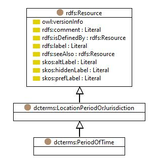

http://purl.org/dc/terms/PeriodOfTime
Class dcterms:PeriodOfTime

dcterms:hasVersion
http://dublincore.org/usage/terms/history/#PeriodOfTime-001
dcterms:issued
2008-01-14
rdf:type
rdfs:Class
rdfs:comment
An interval of time that is named or defined by its start and end dates.
rdfs:isDefinedBy
http://purl.org/dc/terms/
rdfs:label
Period of Time
rdfs:subClassOf
dcterms:LocationPeriodOrJurisdiction
References
as rdfs:range (
dcterms:temporal
)
Generated with
TopBraid Composer
by
TopQuadrant, Inc.